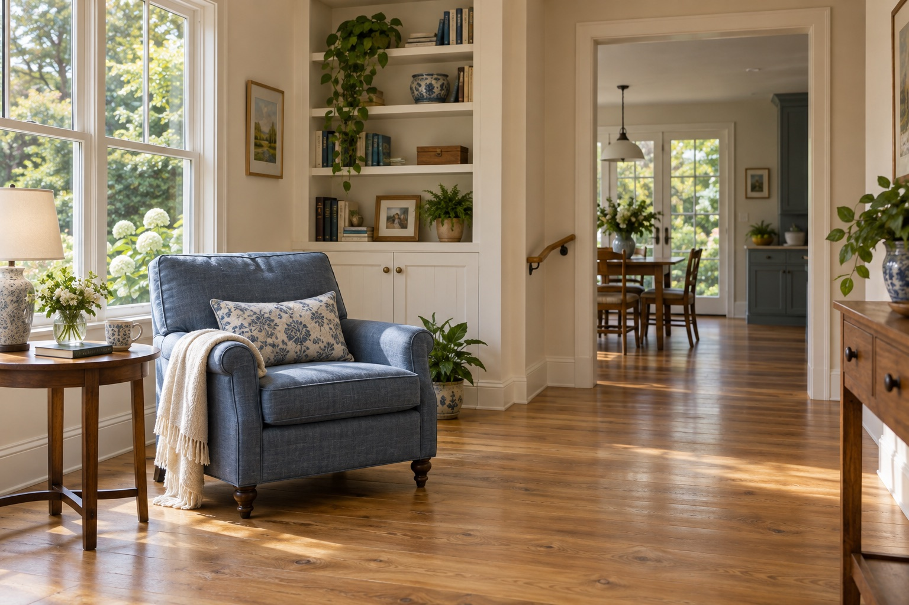

A bathroom that works for her
Easier access, thoughtful support, and room to move. Start with how she uses the space.
 Let’s talk
Let’s talkSometimes the next step is changing the house, not her address. Start with the parts of the day that are getting harder.
Talk about this pathEasier access, thoughtful support, and room to move. Start with how she uses the space.
Look at entrances, steps, lighting, and the everyday routes through her home.
Talk about what can change—and what she wants to keep exactly as it is.
Where does she hesitate? What does she avoid? What does she still love doing? Those answers are a better beginning than a list of renovations.
Questions worth asking
Changes to a home can help with everyday access and comfort. They don’t replace personal care or other support Mom may need.
Yes. The three paths are ways to think about your options, not boxes your family has to stay in.
Ask who will assess the space, who will do the work, what qualifications they hold, the written scope and price, and how Mom’s day will be affected.
Tell us a little about what’s changing. We can talk through what might help—and what feels right for Mom.
Let’s find your next stepA conversation. No need to decide today.